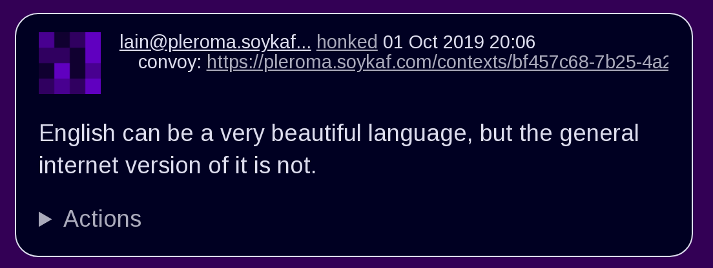

| HONK(1) | General Commands Manual | HONK(1) |
honk — federated
status conveyance
The honk utility processes federated
status updates and other microblog activities. This is the user manual. For
administration, see honk(8). For other
documentation, refer to the
intro(1).
This manual is still incomplete. It'll get there eventually.
Initially, there won't be much to see after logging in. In order to receive regular updates from other users, they must first be added to one's honker collection. Begin at the honkers tab. The url field is required. Either of two forms are accepted, the user's handle (or webfinger) or their ActivityPub actor URL.
@user@example.socialhttps://example.social/users/userThe name field is optional and will be automatically inferred. The notes field is reserved for user remarks. Fellow honkers may be added to one or more combos to suit one's organizational preferences. These are accessed via the combos tab and allow easy access to particular groupings. The special combo name of one hyphen ‘-’ will exclude a honker's posts from the primary feed.
It is also possible to skip subscribing. In this case, regular posts are not received, but replies and posts fetched via other means will appear in the relevant combos.
In addition to honkers, it is possible to subscribe to a hashtag collection. (Where supported.) Enter the collection URL for url.
Separately, hashtags may be added to a combo by creating a honker with a url of the desired hashtag (including #). Several hashtags may thus be collected in a single combo.
The primary feed is accessed via the home tab. It will contain posts from all honkers except those specifically excluded. Posts mentioning the user, both followed and not, are collected under the @me tab. Other feeds include first which excludes replies, the user defined options under the combos subheading, and the events page which lists only events.
Individual honks contain a visual representation of the honker's ID, their name, the activity (with a link back to origin), a link to the parent post if applicable, and the convoy (thread) identifier. A red border indicates the honk is not public. Screenshot below.

screenshot of one
honk
Available actions are:
bonkhonk
backmutezonkacksaveuntag
mebadonkeditClicking the refresh button will load new honks, if any. New honks will be subtly highlighted.
Refer to the honk(5) section of the manual for details of honk composition.
Find old honks. It's basic substring match with a few extensions. The following keywords are supported:
Example:
honker:goose big moose
-footlooseSometimes other users of the federation can get unruly. The honk filtering and censorship system, hfcs(1), can be of great use to restore order to one's timeline. Accessed via the filters menu item.
The xzone page lists recently seen honkers that are not otherwise tracked. It also allows the import of external objects via URL, either individual posts or actor URLs, in which case their recent outbox is imported.
It's all about you. An avatar may be selected from the funzone by adding “avatar: filename.png” to one's profile info. If truly necessary.
Some options to customize the site appearance:
honk is designed to work with most
browsers, but for optimal results it is recommended to use a 2015 or later
Thinkpad X1 Carbon with 2560x1440 screen running
OpenBSD and chromium at 150% scaling with the dwm
window manager. This will enable the main menu to line up just right.
Started March 2019.
Ted Unangst @tedu@honk.tedunangst.com
Completing some operations, such as subscribing to new honkers, requires an aptitude for clipboard use and tab switching along with a steady hand. For the most part, these are infrequent operations, but they are also the first operations new users encounter. This is not ideal.
The ActivityPub standard is subject to interpretation, and not all
implementations are as enlightened as honk.
It's a feature.
| December 10, 2020 | OpenBSD 6.7 |